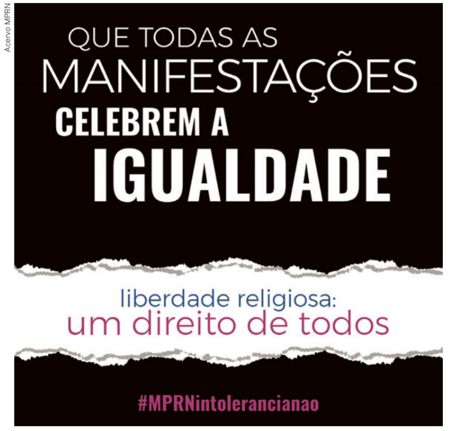

1.
A Sociologia considera o estudo das religiões sob diferentes aspectos, que abrangem o conceito de secularização, a religião como instituição social, o pertencimento religioso, o entendimento da religião como instrumento de poder, entre outros. Escolha um desses aspectos e explique-o, embasando sua ideia em dados e/ou nas teorias de pensadores como Max Weber, Émile Durkheim e Karl Marx.
2.
Embora seja um Estado laico, o Brasil recebe influência da religião em diferentes aspectos políticos. Que influências são essas? Cite alguns exemplos, analisando se há mais aspectos positivos ou negativos.
3.
Na sua comunidade, os adolescentes se interessam pela religiosidade? Há uma busca pela compreensão do que seriam “os mistérios da vida” por meio das religiões?
4.
O que significa pertencimento religioso para você? Caso sinta-se à vontade, compartilhe com seus colegas sua vivência em relação a isso, mencionando sua religião ou sua autodefinição como ateu ou agnóstico e destacando os impactos desse pertencimento em sua vida.
5.
(Uece – 2022)
A escravidão das populações indígenas e negras no Brasil produziu a desintegração dos seus diversos universos religiosos de origem e, ao longo do processo de formação social brasileiro, ocorreu a assimilação de elementos fraturados das crenças ameríndias e africanas pelas tradições cristã e católica. E, por outro lado, houve também processos de assimilação ou sincretismo na criação de novas religiões produzidas a partir de crenças remanescentes indígenas e africanas misturadas com elementos do cristianismo. Para Ortiz (1999), o que ocorreu foi uma cristianização daquelas antigas religiões fraturadas em algumas crenças cultivadas por índios e negros escravizados e que resultaram, por exemplo, na Umbanda e no Candomblé.
Sobre essas religiões oriundas do sincretismo de crenças africanas, indígenas e europeias, é correto afirmar que:
a) o Candomblé é uma religião afro-brasileira que nega as raízes africanas e adota o culto a santos católicos.
b) a Umbanda, única religião afro-brasileira, é a mais pura e próxima das tradições e crenças africanas.
c) o Candomblé e a Umbanda são, também, modos de sobrevivência das antigas religiões das etnias indígenas e negras.
d) a Umbanda, o Candomblé e a Macumba surgem, na verdade, como formas de negar a imposição do cristianismo.
A escravidão das populações indígenas e negras no Brasil produziu a desintegração dos seus diversos universos religiosos de origem e, ao longo do processo de formação social brasileiro, ocorreu a assimilação de elementos fraturados das crenças ameríndias e africanas pelas tradições cristã e católica. E, por outro lado, houve também processos de assimilação ou sincretismo na criação de novas religiões produzidas a partir de crenças remanescentes indígenas e africanas misturadas com elementos do cristianismo. Para Ortiz (1999), o que ocorreu foi uma cristianização daquelas antigas religiões fraturadas em algumas crenças cultivadas por índios e negros escravizados e que resultaram, por exemplo, na Umbanda e no Candomblé.
ORTIZ, R. A morte branca do feiticeiro negro: umbanda e sociedade brasileira. São Paulo: Brasiliense, 1999.
Sobre essas religiões oriundas do sincretismo de crenças africanas, indígenas e europeias, é correto afirmar que:
a) o Candomblé é uma religião afro-brasileira que nega as raízes africanas e adota o culto a santos católicos.
b) a Umbanda, única religião afro-brasileira, é a mais pura e próxima das tradições e crenças africanas.
c) o Candomblé e a Umbanda são, também, modos de sobrevivência das antigas religiões das etnias indígenas e negras.
d) a Umbanda, o Candomblé e a Macumba surgem, na verdade, como formas de negar a imposição do cristianismo.
6.
Observe o cartaz a seguir e faça o que se pede.

Analise o cartaz e, com base em sua
compreensão, elabore um pequeno texto
indicando qual é a mensagem principal
e o que ele visa combater. Destaque os
elementos que lhe permitiram chegar a
essas conclusões e procure apresentar
exemplos do tema destacado.
Cartaz de divulgação de campanha contra a intolerância religiosa, promovida pelo Ministério Público do Rio Grande do Norte em 2019. Disponível em: https://www.ampern.org.br/mprn-lanca-campanha-de-combate-a-intolerancia-religiosa. Acesso em: 12 set. 2024.